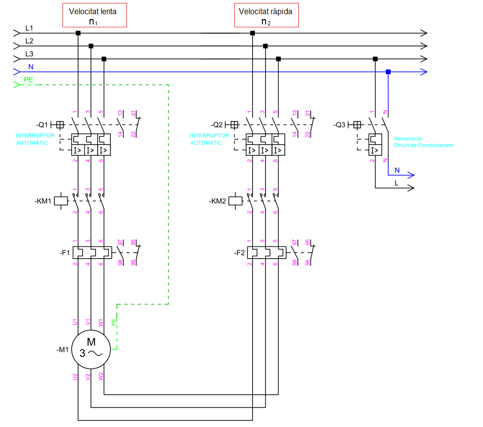

Des d'un punt de vista elèctric un motor de bobinats independents és equivalent a dos motors asíncrons, cadascún d'ells amb un consum de corrent diferent. Per tant, a l'hora d'implementar el circuit de porència hem de tindre en compte que les protección han de ser diferents per a cada velocitat:

Es evident que tan sols un dels contactors ha d'estar actiu en cada moment, ja que el motor tan sols pot girar a una determinada velocitat (lenta o ràpida).